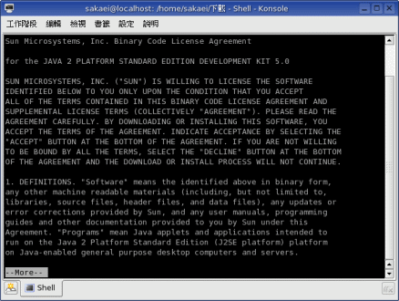
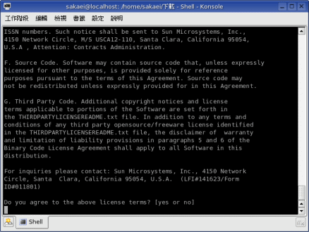
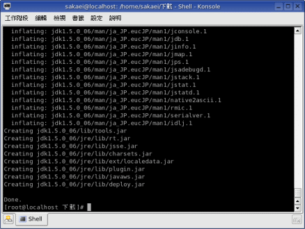
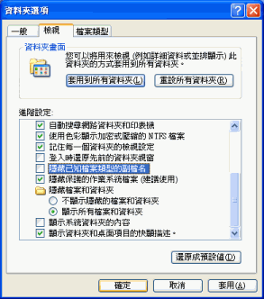

J2SE Development Kit 安裝指南
本文介紹時 J2SE Development Kit 的版本是 1.5.0 Update 1，而目前已推出 Update 5 了。然而更新版本的安裝過程與之前並沒有什麼差異，因此本篇文章依然適用於 Update 5 版的 J2SE Development Kit。
產品介紹
一般在談的 Java，其實是指 Sun 公司的產品：J2SE。
J2SE 是 Java 2 Platform Standard Edition 的意思，中文是「第二代爪哇平台標準版」。J2SE 主要支援兩款產品，分別是 J2SE Development Kit 與 J2SE Runtime Environment。
J2SE Development Kit
J2SE Development Kit 是「第二代爪哇平台標準版」的「開發套件」，安裝這套軟體的話，電腦就能開發 Java 程式，是 Java 程式設計師必備的工具。通常我們將 J2SE Development Kit 簡稱 JDK。
J2SE Runtime Environment
J2SE Runtime Environment 是「第二代爪哇平台標準版」的「執行環境」，通常簡稱 JRE。電腦只要安裝這個軟體，就可以執行由 J2SE 所開發出來的各種程式。
J2SE 1.5.0
在整理這篇文章時，J2SE 已經出到 1.5.0 版。
這個版本的 JDK 支援了幾項更先進的語法功能，因此官方網站直接以 JDK 5.0 稱呼它，甚至為它取一個代號叫做 Tiger，表示這版的 Java 就如老虎般勇猛有力。
5.0 所新增的語法功能如下：
1. Generics - 能讓集合類別進行型別檢查。
2. Enhanced for Loospan - 可直接取出陣列結構資料的迴圈。
3. Autoboxing/Unboxing - 提供區間自動轉型的功能。
4. Typesafe Enums - 一般程式設計的列舉型態。
5. Varargs - 讓參數的數量是可變動的，不再拘限於固定個參數。
6. Static Import - 用來事先宣示類別關係，讓物件內部功能的呼叫變得簡化。
7. Annotations (Metadata) - 利用程式碼的注解製作原始碼樣板。
這些都是相當重要或者實用的功能，因此本站建議下載這個版本來使用。
下載 J2SE Development Kit
要建立 Java 程式的開發環境，必須下載 JDK 來安裝。
請連線到 Java Technology 網站，在 J2SE (Core/Desktop) 主題的網頁裡尋找 JDK 5.0 的下載。
如果你手上有合法的 Windows 98/ME/2000/XP 作業系統，那你可以下載 Windows 版的 JDK。Windows 作業系統的桌面環境具備簡便的操作性，使用它來開發 Java 能讓工作更為順暢。說起 Windows XP 作業系統，畢竟這是家用或者公務用的作業系統，不是伺服器作業系統，因此在運作 Java 系統時效能偏差，所以筆者建議你不妨另外安裝一下 Linux 作業系統來試試，體會一下什麼叫 Java 飆速的快感。
如果沒有 Windows 作業系統，可以使用 Mandrake Linux 10，然後下載 Linux 版的 JDK。Mandrake Linux 10 的桌面環境幾乎跟 Windows 一樣便利，而且也相當耐操，是非常優異的組合。下載 Linux 版本的 JDK 時，會有 bin 與 rpm 兩種檔案格式，本站建議使用 bin 檔即可。
你可以參考如下 JDK 5.0 Update 1 的檔名，確認是否下載正確： (依版本序號的不同檔名會有差異)
Windows
jdk-1_5_0_01-windows-i586-p.exe
Linux
jdk-1_5_0_01-linux-i586.bin
安裝 JDK 5.0
在 Windows 作業系統的安裝
Windows 版的 JDK，只要點兩下下載回來的安裝檔即可進入安裝過程。安裝過程中沒有什麼特別的設定，只要一直按「下一步」就可以順利安裝完成。不過，如果你想對整個安裝過程有進一步的了解，可以參考《Windows XP 的 JDK 安裝指南》這篇文章。
安裝好 JDK 之後，為了更方便使用，我們還需要進行兩項設定，就是「環境變數」與「副檔名」。
設定環境變數可以讓你不用指定 JDK 的所在路徑就能使用開發工具。設定副檔名可以讓你更方便更改檔案的類型。這些設定會在後面的內容陸續介紹。
在 Linux 作業系統的安裝
Linux 版的 JDK 則需要開啟終端機模式，用指令將目錄切換到 jdk-1_5_0_01-linux-i586.bin 檔案所在處，然後輸入：
./jdk-1_5_0_01-linux-i586.bin
即可展開安裝程序，如下圖：

這個安裝程序必須顯示完許可協議書，才能按 Y 同意，繼續進行安裝。你可以按空白鍵一次跳躍一整頁的內容來閱讀它。下圖是顯示完許可協議書內容，詢問是否同意的畫面：

當你按 Y 同意後，就會開始安裝 JDK。
雖然說是安裝，但其實有種解壓縮的感覺而已。底下是「解壓」完以後的畫面：

這時存放 jdk-1_5_0_01-linux-i586.bin 的地方會出現名為 jdk1.5.0_01 的資料夾，把這個資料夾移到你喜歡的位置，然後設定個環境變數指向該位置就 OK 了。例如我是將 jdk1.5.0_01 資料夾放到 /opt 裡面。
至於如何在 Linux 作業系統設定環境變數，在本篇稍後的內容會介紹到。
補充
雖然安裝過程很簡單，但比較需要注意的是，你必須把 JDK 安裝的資料夾位置記下來，因為在設定環境變數時需要用到。你可以參考如下的安裝路徑：
Windows
C:\Program Files\java\jdk1.5.0_01
Linux
/opt/jdk1.5.0_01
使用 JDK 5.0
安裝好 JDK 之後，就可以在 Windows XP 的命令提示字元或 Windows 98/ME 的 MS-DOS 模式，將目錄切換到 C:\Program Files\Java\jdk1.5.0_01\bin 裡，或 Linux 終端機模式的 /opt/jdk1.5.0_01/bin 裡，使用各種指令工具來操作 Java。
最主要的指令工具如下：
javac - 用來編譯 Java 原始程式碼，產生可供 Java 虛擬機器執行的 Class 檔。
java - 用來啟動 Java 虛擬機器執行載入的 Class 檔。
設定環境變數
每次使用 javac 指令都要切換目錄的話實在很麻煩！所以我們必須設定環境變數，將 C:\Program Files\Java\jdk1.5.0_01\bin 或 /opt/jdk1.5.0_01/bin 登入到系統，以後就可以在每個路徑使用 javac 了。
Windows XP
請執行「開始」→「控制台」→「效能及維護」→「系統」，然後會出現「系統內容」視窗。
點選「進階」頁簽，然後按「環境變數」鈕，按「系統變數」裡面的「新增」鈕，在「變數名稱」輸入「JAVA_HOME」，在「變數值」輸入「C:\Program Files\Java\jdk1.5.0_01」，然後按「確定」。
接著用滑鼠點一下「系統變數」裡面的「Path」變數，然後按「編輯」，在「變數值」的最後面，加入「;%JAVA_HOME%/bin」這串文字，然後按「確定」。
如此即可隨時使用 JDK 的工具指令來開發 Java 程式了！
Windows 2000
請執行「開始」→「控制台」→「系統」，然後會出現「系統內容」視窗。
點選「進階」頁簽，然後按「環境變數」鈕，按「系統變數」裡面的「新增」鈕，在「變數名稱」輸入「JAVA_HOME」，在「變數值」輸入「C:\Program Files\Java\jdk1.5.0_01」，然後按「確定」。
接著用滑鼠點一下「系統變數」裡面的「Path」變數，然後按「編輯」，在「變數值」的最後面，加入「;%JAVA_HOME%/bin」這串文字，然後按「確定」。
如此即可隨時使用 JDK 的工具指令來開發 Java 程式了！
Windows ME
點選「開始」→「執行」，在輸入欄裡輸入 msconfig 然後按確定，會出現「系統組態編輯程式」。
點選「環境」頁簽，按「新增」鈕，然後在「變數名稱」輸入「JAVA_HOME」，在「變數值」輸入「C:\Program Files\Java\jdk1.5.0_01」，然後按「確定」。
接著用滑鼠點一下「Path」變數，然後按「編輯」。在「變數值」的最後面，加入「;%JAVA_HOME%/bin」這串文字，然後按「確定」。
Windows 98
請使用純文字編輯器 (例如記事本) 編輯 Autoexec.bat，在裡面加入如下敘述：
PATH=C:\Program Files\Java\jdk1.5.0_01\bin
然後重新開機即可。
Linux
請以純文字編輯器修改使用者目錄裡面的 .profile 檔案，加入如下敘述：
export JAVA_HOME="/opt/jdk1.5.0_01"
export PATH="$PATH:$JAVA_HOME/bin"
.profile 檔案是隱藏檔，因此你可能要從家目錄視窗的功能表中點選「檢視」→「顯示隱藏檔」，.profile 檔案才會顯現出來。
當你儲存修改好的設定，就可以開啟一個新的終端機程式，試著輸入 java 指令看看，應該會顯示 Java 的訊息。[1]
Windows 作業系統的後續設定
使用 JDK 來開發 Java 程式，原始碼必須儲存在副檔名為 java 的檔案裡面，這樣才能編譯。
檔案的副檔名只要在「重新命名」就能夠寫上去。不過，Windows 98/ME/XP 在正常的設定下，是將檔案的副檔名隱藏起來，因此你很難正確更改檔案的副檔名。[2]
下面的步驟會告訴你如何顯示檔案的副檔名。
1. 按「開始」→「我的電腦」，進入我的電腦視窗。
2. 執行功能表的「工具」→「資料夾選項」，會出現「資料夾選項」視窗。
3. 點入「檢視」頁籤，然後在「進階設定」的部份，找到「隱藏已知檔案類型的副檔名」，取消該項的勾選，然後按「確定」即可。

完成這樣的設定後，以後只要新增純文字文件，然後把檔名改為 *.java 的型式，就可以開始寫 Java 程式了。